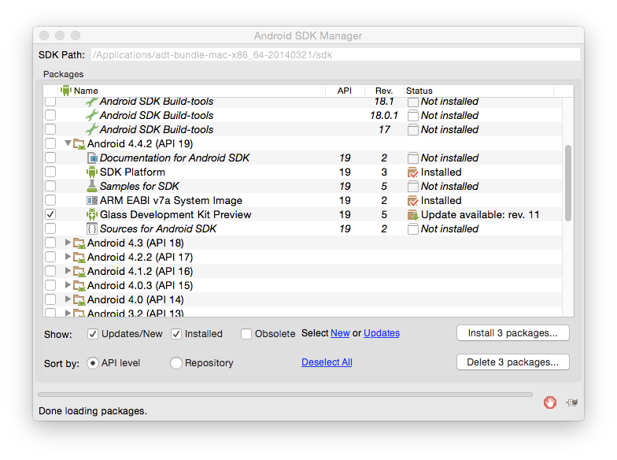
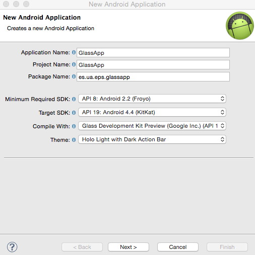
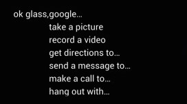
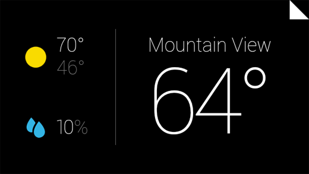
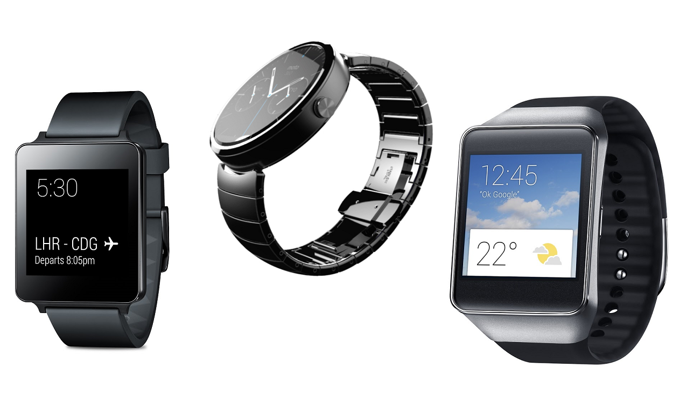
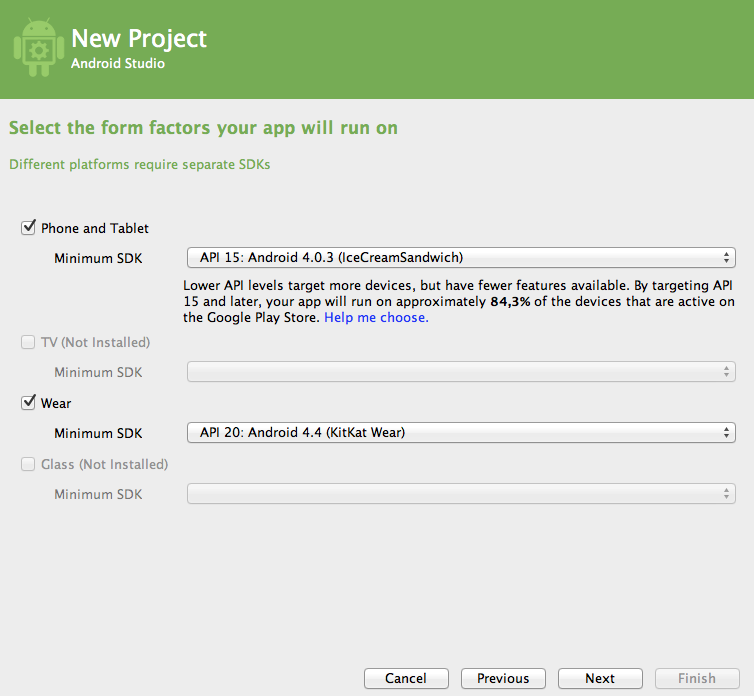
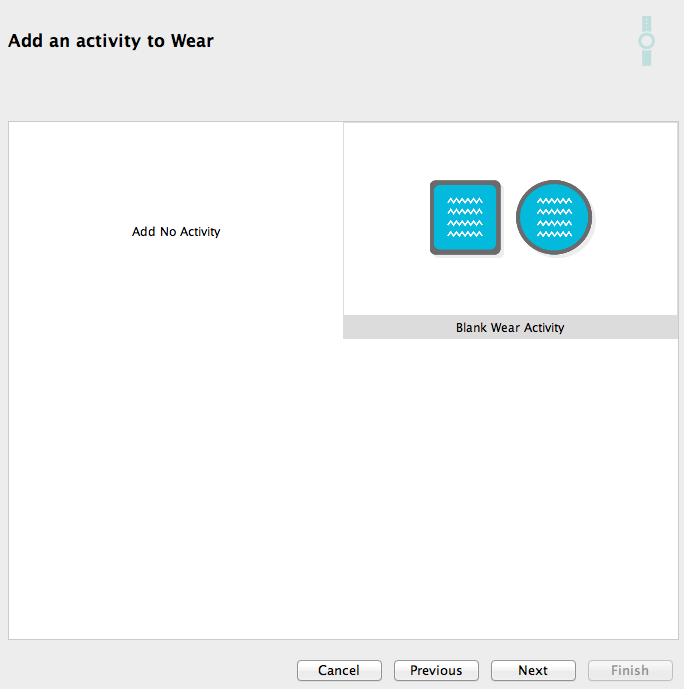
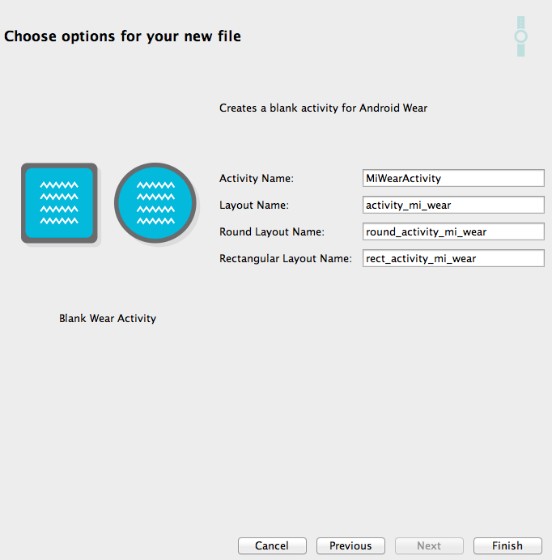
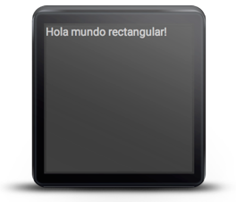
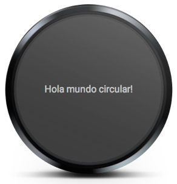

Dispositivos vestibles¶
Existen distintos tipos de dispositivos que actúan como complementos a los teléfonos móviles y tables, como por ejemplo relojes y gafas, que son conocidos como dispositivos vestibles (wearable devices).
Estos dispositivos cuentan con una interfaz más limitada, con una pantalla más reducida y sin la posibilidad de mostrar un teclado táctil, pero nos permiten tener un acceso más rápido a información básica, como por ejemplo a notificaciones que recibamos en el móvil.
Vamos a estudiar estos dispositivos mediante dos ejemplos: los relojes Android y las Google Glass. En ambos casos, suple las limitaciones de la interfaz con:
- Comandos de voz que podemos utilizar para lanzar las aplicaciones.
- Interfaz basadas en tarjetas (cards).
- Gestos para navegar por la aplicación.
Google Glass¶
El desarrollo de aplicaciones para Google Glass se realiza utilizando Glass Development Kit (GDK) que se encuentra bajo la API 19.
En primer lugar deberemos entrar en Android SDK Manager y nos aseguramos de que en el bloque Android 4.4.2 (API 19) tengamos instalado el _item Glass Development Kit Preview. En caso de no tenerlo instalado, lo instalaremos.

Una vez instalado GDK, para crear un proyecto para Glass deberemos crear un nuevo Android Application Project y en el bloque Compile With seleccionaremos Glass Development Kit Preview (Google Inc.) (API 19).

Aunque el proyecto para Google Glass se puede crear con Eclipse + ADT como hemos visto, tendremos mayores facilidades si utilizamos Android Studio, ya que nos permite crear una plantilla específica para este tipo de proyectos.
Al desarrollar aplicaciones con GDK contaremos con la API de Android y con algunas clases adicionales incluidas en GDK como por ejemplo reconocer los gestos habituales en las aplicaciones para estos dispositivos, crear y mostrar tarjetas, o lanzar actividades con comandos de voz.
Vamos a ver a continuación los elementos principales que debería tener una aplicación destinada a las Google Glass.
Triggers de voz¶
Dado que una de las ventajas de las Google Glass es poder utilizarlas sin ocupar las manos, será importante dar la posibilidad de lanzar nuestras actividades mediante comandos de voz. Esto se hará pronunciando "Ok glass" seguido de la aplicación que queremos ejecutar.

Para implementar esta funcionalidad, en la declaración de nuestra actividad en AndroidManifest.xml añadiremos un <intent-filter> de tipo VOICE_TRIGGER, y una etiqueta <meta-data> con la que indicaremos cuál será el comando de voz que podrá lanzar la actividad:
<activity
android:name="ua.es.jtech.glass.MainActivity"
android:label="@string/app_name" >
<intent-filter>
<action android:name="com.google.android.glass.action.VOICE_TRIGGER" />
</intent-filter>
<meta-data
android:name="com.google.android.glass.VoiceTrigger"
android:resource="@xml/voice_trigger_start" />
</activity>
Los datos sobre el trigger a utilizar se definen en el fichero res/xml/voice_trigger_start.xml:
<?xml version="1.0" encoding="utf-8"?>
<trigger command="START_BROADCASTING" />
Tenemos una serie de triggers predefinidos para lanzar la aplicación. Por ejemplo, en el caso anterior nuestra actividad se abrirá cuando pronunciemos "Ok glass" seguido del comando "Start broadcasting".
Podemos obtener la lista de posibles comandos de voz consultando la lista de elementos de la enumeración VoiceTriggers.Command de GDK:
https://developers.google.com/glass/develop/gdk/reference/com/google/android/glass/app/VoiceTriggers.Command
Tarjetas¶
La interfaz de las aplicaciones Google Glass normalmente se componen de una serie de tarjetas, que habitualmente tienen fondo negro y texto blanco. Podemos definirlas en XML o de forma programada mediante CardBuilder

Tarjetas con CardBuilder¶
La clase CardBuilder nos permite construir tarjetas que se ajusten a la disposición recomendada. Tenemos definidos diferentes posibles layouts en CardBuilder.Layout que podremos aplicar a las tarjetas en el momento de su creación.
View view = new CardBuilder(context, CardBuilder.Layout.TEXT)
.setText("Texto del contenido de la tarjeta")
.setFootnote("Nota a pie")
.setTimestamp("ahora")
.getView();
Una vez obtenida la vista de la tarjeta, podremos añadirla como contenido a la actividad o bien a un objeto CardScrollView para así poder navegar a través de varias tarjetas mediante scroll.
Tarjetas en XML¶
Si ninguno de los layout definidos en CardBuilder.Layout se ajusta a nuestras necesidades, podemos crear nuestras propias tarjetas en XML.
Para definir el layout de las tarjetas en XML podemos definir una serie de dimensiones estándar en el fichero res/values/dimens.xml:
<?xml version="1.0" encoding="utf-8"?>
<resources>
<!-- Margen recomendado para los bordes de la tarjeta. -->
<dimen name="glass_card_margin">40px</dimen>
<!-- Margen recomendado entre la parte inferior de la tarjeta
y el pie. Se ajusta de forma que la linea de base del texto
del pie se situe a 40px de la parte inferior de la tarjeta.
-->
<dimen name="glass_card_footer_margin">33px</dimen>
<!-- Margen recomendado para la columna izquierda. -->
<dimen name="glass_card_two_column_margin">30px</dimen>
<!-- Maxima altura del contenido del cuerpo de la tarjeta. -->
<dimen name="glass_card_body_height">240px</dimen>
<!-- Anchura de la columna izquierda. -->
<dimen name="glass_card_left_column_width">240px</dimen>
</resources>
Una vez definidas estas dimensiones, podemos utilizar el siguiente layout como plantilla para las tarjetas:
<?xml version="1.0" encoding="utf-8"?>
<FrameLayout xmlns:android="http://schemas.android.com/apk/res/android"
xmlns:tools="http://schemas.android.com/tools"
android:id="@+id/layout"
android:layout_width="match_parent"
android:layout_height="match_parent"
>
<RelativeLayout
android:id="@+id/body_layout"
android:layout_width="match_parent"
android:layout_height="@dimen/glass_card_body_height"
android:layout_marginLeft="@dimen/glass_card_margin"
android:layout_marginTop="@dimen/glass_card_margin"
android:layout_marginRight="@dimen/glass_card_margin"
tools:ignore="UselessLeaf"
>
<!-- Introducir aquí el contenido de la tarjeta. -->
</RelativeLayout>
<LinearLayout
android:id="@+id/footer_container"
android:layout_width="match_parent"
android:layout_height="wrap_content"
android:layout_gravity="bottom|left"
android:layout_marginLeft="@dimen/glass_card_margin"
android:layout_marginBottom="@dimen/glass_card_footer_margin"
android:layout_marginRight="@dimen/glass_card_margin"
android:orientation="horizontal"
>
<TextView
android:id="@+id/footer"
android:layout_width="0dip"
android:layout_height="wrap_content"
android:layout_weight="1"
android:ellipsize="end"
android:singleLine="true"
android:textAppearance="?android:attr/textAppearanceSmall"
/>
<TextView
android:id="@+id/timestamp"
android:layout_width="wrap_content"
android:layout_height="wrap_content"
android:layout_marginLeft="@dimen/glass_card_margin"
android:ellipsize="end"
android:singleLine="true"
android:textAppearance="?android:attr/textAppearanceSmall"
/>
</LinearLayout>
</FrameLayout>
En este layout tenemos una sección principal de contenido, y además también podemos introducir un pie y un timestamp.
Podemos también crear tarjetas con dos columnas utilizando la siguiente plantilla:
<?xml version="1.0" encoding="utf-8"?>
<RelativeLayout xmlns:android="http://schemas.android.com/apk/res/android"
xmlns:tools="http://schemas.android.com/tools"
android:layout_width="match_parent"
android:layout_height="match_parent"
>
<RelativeLayout
android:id="@+id/left_column"
android:layout_width="@dimen/glass_card_left_column_width"
android:layout_height="match_parent"
>
<!-- Introducir contenido de la columna izquierda. -->
</RelativeLayout>
<RelativeLayout
android:layout_width="wrap_content"
android:layout_height="@dimen/glass_card_body_height"
android:layout_alignParentRight="true"
android:layout_alignParentTop="true"
android:layout_marginLeft="@dimen/glass_card_two_column_margin"
android:layout_marginRight="@dimen/glass_card_margin"
android:layout_marginTop="@dimen/glass_card_margin"
android:layout_toRightOf="@+id/left_column"
tools:ignore="UselessLeaf"
>
<!-- Introducir contenido de la columna derecha. -->
</RelativeLayout>
<LinearLayout
android:id="@+id/footer_container"
android:layout_width="wrap_content"
android:layout_height="wrap_content"
android:layout_alignParentBottom="true"
android:layout_alignParentRight="true"
android:layout_gravity="bottom|left"
android:layout_marginBottom="@dimen/glass_card_footer_margin"
android:layout_marginLeft="@dimen/glass_card_two_column_margin"
android:layout_marginRight="@dimen/glass_card_margin"
android:layout_toRightOf="@+id/left_column"
android:orientation="horizontal"
>
<TextView
android:id="@+id/footer"
android:layout_width="0dip"
android:layout_height="wrap_content"
android:layout_weight="1"
android:ellipsize="end"
android:singleLine="true"
android:textAppearance="?android:attr/textAppearanceSmall"
/>
<TextView
android:id="@+id/timestamp"
android:layout_width="wrap_content"
android:layout_height="wrap_content"
android:layout_marginLeft="@dimen/glass_card_margin"
android:ellipsize="end"
android:singleLine="true"
android:textAppearance="?android:attr/textAppearanceSmall"
/>
</LinearLayout>
</RelativeLayout>
Gestos¶
En las aplicaciones Google Glass encontramos una serie de gestos estándar:
- El barrido lateral a la izquierda o la derecha nos permite movernos entre las diferentes tarjetas disponibles.
- El barrido hacia abajo nos permite salir de la actividad actual.
- El tap nos permite seleccionar la tarjeta actual.
Podemos utilizar el objeto GestureDetector para reconocer los diferentes gestos disponibles:
public class MainActivity extends Activity {
private final GestureDetector.BaseListener mBaseListener = new GestureDetector.BaseListener() {
@Override
public boolean onGesture(Gesture gesture) {
if (gesture == Gesture.TAP) {
mAudioManager.playSoundEffect(Sounds.TAP);
// Realizar acción
return true;
} else {
return false;
}
}
};
private AudioManager mAudioManager;
private GestureDetector mGestureDetector;
@Override
protected void onCreate(Bundle savedInstanceState) {
super.onCreate(savedInstanceState);
setContentView(R.layout.activity_main);
mAudioManager = (AudioManager) getSystemService(Context.AUDIO_SERVICE);
mGestureDetector = new GestureDetector(this).setBaseListener(mBaseListener);
}
}
Relojes¶
Para el desarrollo de aplicaciones para este tipo de dispositivos utilizaremos Android 4.4W (versión para wearables), y la librería de soporte v4 (o v13) que incluye soporte para wearables.
Las aplicaciones para wearables desarrolladas con esta versión de la API siempre deberán distribuirse dentro de una aplicación para dispositivos móviles. Durante el desarrollo podemos instalar la aplicación wear directamente en el dispositivo o emulador del wearable, pero cuando la distribuyamos siempre deberá instalarse como complemento de la aplicación móvil.

Entre los dispositivos soportados por esta API, encontramos relojes que tienen pantalla rectangular y también tenemos relojes con pantalla circular. Esto supondrá una dificultad ya que elementos que se ven correctamente en una pantalla cuadrada pueden aparecer cortados en una circular.
Creación del emulador¶
Para crear un emulador de un dispositivos wear deberemos especificar los siguientes datos:
- Target: Android 4.4W
- Device: Android Wear Round o Android Wear Square, según si queremos emulador un reloj con pantalla rectangular o circular.
Se podrá emparejar el emulador o dispositivo wearable con un dispositivo móvil, instalando en este último la aplicación Android Wear.
Creación de un proyecto¶
Es recomendable utilizar Android Studio para la creación de proyectos wear, ya que está preparado para generar plantillas para este tipo de proyectos.

Al crear un proyecto se deberá crear la aplicación móvil y la aplicación wear adjunta. Tendremos que especificar:
- Para teléfono/tablet el SDK mínimo será la API 9 (2.3)
- Para dispositivo wear el SDK mínimo será la API 20 (4.4W)
Podremos crear una actividad inicial tanto para la aplicación móvil como para la aplicación wear. El entorno nos da la opción de crear una plantilla de una actividad wear vacía:

De la actividad wear se creará un layout general, y dos layouts alternativos según si el dispositivo es rectángular o circular:

Comandos de voz¶
Al igual que en el caso de Glass, podemos utilizar una serie de comandos de voz predefinidos para lanzar las aplicaciones. En este caso, con estos comandos el sistema lanzará un intent que nuestra aplicación puede capturar para ejecutarse cuando se produzca. Por ejemplo tenemos:
<activity android:name="MiTaxiActivity">
<intent-filter>
<action android:name="com.google.android.gms.actions.RESERVE_TAXI_RESERVATION" />
</intent-filter>
</activity>
Cuando digamos “Ok google, get me a taxi” se producirá el intent RESERVE_TAXI_RESERVATION que lanzará la actividad anterior, al haber incluido dicha acción como <intent-filter>.
Podemos ver la lista completa de comandos de voz en:
http://developer.android.com/training/wearables/apps/voice.html
Si ninguno de los comandos disponibles se adapta a nuestra aplicación, podemos lanzarla simplemente diciendo “Ok google, start [nombre de la aplicación]”. Para ello definiremos en la actividad principal una etiqueta android:label en la que indicaremos el nombre que deberemos pronunciar para ejecutar nuestra aplicación:
<application>
<activity android:name="MainActivity" android:label="Vision">
<intent-filter>
<action android:name="android.intent.action.MAIN" />
<category android:name="android.intent.category.LAUNCHER" />
</intent-filter>
</activity>
</application>
En esta caso anterior la aplicación se ejecutará cuando digamos “Ok google, start Vision”.
Dentro de nuestras actividades también podremos utilizar el sistema de reconocimiento del habla de Android para poder manejarlas mediante voz.
Interfaz de usuario¶
Como hemos comentado anteriormente, la existencia de relojes circulares y rectángulares puede ser una complicación a la hora de diseñar la interfaz de nuestras aplicaciones wear. Existen dos enfoques para hacer que las aplicaciones se adapten correctamente a cada forma:
- Utilizar layouts alternativos para cada tipo de dispositivo
- Utilizar un layout que adapte de forma automática los márgenes
Layouts alternativos¶
Una posible solución consiste en especificar diferentes layouts según si tenemos pantallas rectangulares o circulares. Para ello utilizamos un elemento WatchViewStub en el layout, en el cual especificamos dos layouts alternativos según el tipo de forma del dispositivo:
<?xml version="1.0" encoding="utf-8"?>
<android.support.wearable.view.WatchViewStub
xmlns:android="http://schemas.android.com/apk/res/android"
xmlns:app="http://schemas.android.com/apk/res-auto"
xmlns:tools="http://schemas.android.com/tools"
android:id="@+id/watch_view_stub"
android:layout_width="match_parent"
android:layout_height="match_parent"
app:rectLayout="@layout/rect_activity_mi_actividad_wear"
app:roundLayout="@layout/round_activity_mi_actividad_wear"
tools:context=".MiActividadWear"
tools:deviceIds="wear">
</android.support.wearable.view.WatchViewStub>
Por ejemplo, el layout para dispositivos rectangulares podría ser como el siguiente:
<?xml version="1.0" encoding="utf-8"?>
<LinearLayout xmlns:android="http://schemas.android.com/apk/res/android"
xmlns:tools="http://schemas.android.com/tools"
android:layout_width="match_parent"
android:layout_height="match_parent"
android:orientation="vertical"
tools:context=".MiActividadWear"
tools:deviceIds="wear_square">
<TextView
android:id="@+id/text"
android:layout_width="wrap_content"
android:layout_height="wrap_content"
android:text="@string/hello_square" />
</LinearLayout>

Por otro lado, para dispositivos circulares podríamos tener:
<?xml version="1.0" encoding="utf-8"?>
<RelativeLayout xmlns:android="http://schemas.android.com/apk/res/android"
xmlns:tools="http://schemas.android.com/tools"
android:layout_width="match_parent"
android:layout_height="match_parent"
tools:context=".MiActividadWear"
tools:deviceIds="wear_round">
<TextView
android:id="@+id/text"
android:layout_width="wrap_content"
android:layout_height="wrap_content"
android:layout_centerHorizontal="true"
android:layout_centerVertical="true"
android:text="@string/hello_round" />
</RelativeLayout>

Adaptación automática de los márgenes¶
Contamos con el layout BoxInsetLayout que permite adaptar la interfaz a ambos tipos de pantallas:
<android.support.wearable.view.BoxInsetLayout
xmlns:android="http://schemas.android.com/apk/res/android"
xmlns:app="http://schemas.android.com/apk/res-auto"
android:background="@drawable/fondo"
android:layout_height="match_parent"
android:layout_width="match_parent"
android:padding="15dp">
<FrameLayout
android:id="@+id/frame_layout"
android:layout_width="match_parent"
android:layout_height="match_parent"
android:padding="5dp"
app:layout_box="all">
<!-- Introducir contenido del layout -->
</FrameLayout>
</android.support.wearable.view.BoxInsetLayout>
Este layout permitirá ajustar los márgenes de su contenido de forma que queden dentro del espacio de la pantalla. Con el atributo app:layout_box="all" haremos que el marco del layout quede dentro de todos los límites (superior, inferior, derecho e izquierdo) de la pantalla del reloj.
En Android 4.4W2 existe un bug que cause que
BoxInsetLayoutno funcione correctamente en dispositivos redondos.
Tarjetas¶
Podemos añadir tarjetas a un layout como el anterior con las clase CardFragment. Las tarjetas creadas con esta clase tendrán un título, descripción e icono.
FragmentManager fragmentManager = getFragmentManager();
FragmentTransaction fragmentTransaction = fragmentManager.beginTransaction();
CardFragment cardFragment = CardFragment.create("Titulo",
"Descripcion",
R.drawable.icono);
fragmentTransaction.add(R.id.frame_layout, cardFragment);
fragmentTransaction.commit();
Con CardFrame podemos añadir la tarjeta directamente en el layout XML. Podemos también introducir esta tarjeta en un cuadro con scroll, utilizando el elemento CardScrollView.
<android.support.wearable.view.BoxInsetLayout
xmlns:android="http://schemas.android.com/apk/res/android"
xmlns:app="http://schemas.android.com/apk/res-auto"
android:background="#aaf"
android:layout_height="match_parent"
android:layout_width="match_parent">
<android.support.wearable.view.CardScrollView
android:id="@+id/card_scroll_view"
android:layout_height="match_parent"
android:layout_width="match_parent"
app:layout_box="bottom">
<android.support.wearable.view.CardFrame
android:layout_height="wrap_content"
android:layout_width="fill_parent">
<LinearLayout
android:layout_height="wrap_content"
android:layout_width="match_parent"
android:orientation="vertical"
android:paddingLeft="5dp">
<TextView
android:layout_height="wrap_content"
android:layout_width="match_parent"
android:text="Titulo"
android:textColor="@color/black"
android:textSize="20sp"/>
<TextView
android:layout_height="wrap_content"
android:layout_width="match_parent"
android:text="Descripción"
android:textColor="@color/black"
android:textSize="14sp"/>
</LinearLayout>
</android.support.wearable.view.CardFrame>
</android.support.wearable.view.CardScrollView>
</android.support.wearable.view.BoxInsetLayout>
Listas¶
Para introducir una lista utilizaremos la vista WearableListView. Al igual que en el caso de ListView será necesario crear un layout para los items (que implementará WearableListView.Item), y un adaptador (de tipo WearableListView.Adapter) para poblar la lista.
También tenemos GridViewPager para crear un selector 2D.
Pantallas de confirmación¶
Contamos con actividad ConfirmationActivity que podemos utilizar para mostrar confirmaciones de alguna acción que se ha desarrollado. Esta será la forma estándar de mostrar confirmaciones en este tipo de dispositivos. Para poder utilizar esta actividad deberemos declararla en el manifest, aunque no la tengamos que crear nosotros:
<activity
android:name="android.support.wearable.activity.ConfirmationActivity">
</activity>
Una vez declarada, podremos lanzarla mediante un intent:
Intent intent = new Intent(this, ConfirmationActivity.class);
intent.putExtra(ConfirmationActivity.EXTRA_ANIMATION_TYPE,
ConfirmationActivity.SUCCESS_ANIMATION);
intent.putExtra(ConfirmationActivity.EXTRA_MESSAGE,
"Enviado");
startActivity(intent);
También podemos la vista DelayedConfirmationView para dar al usuario un tiempo para cancelar la acción antes de que se confirme.